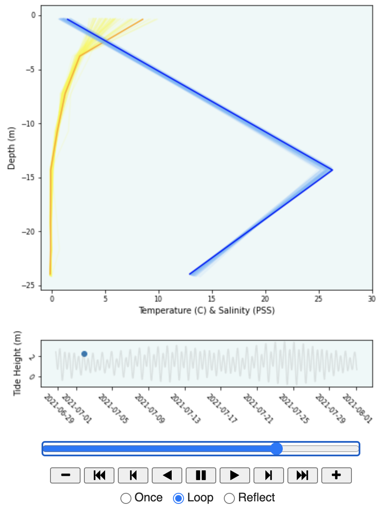
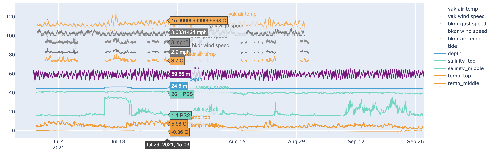
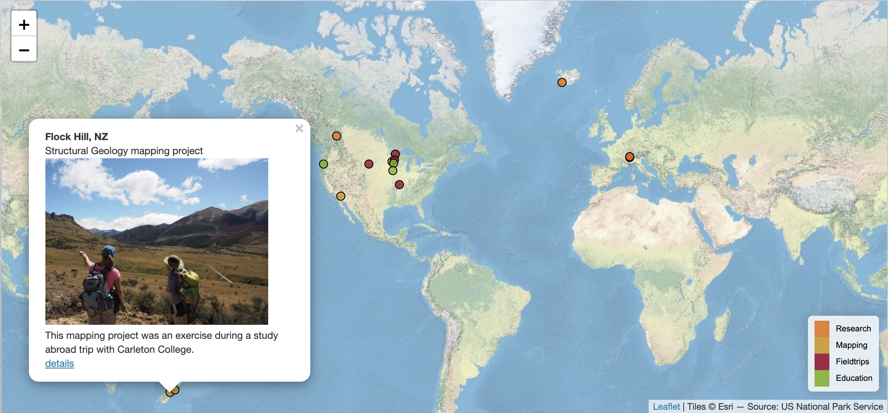
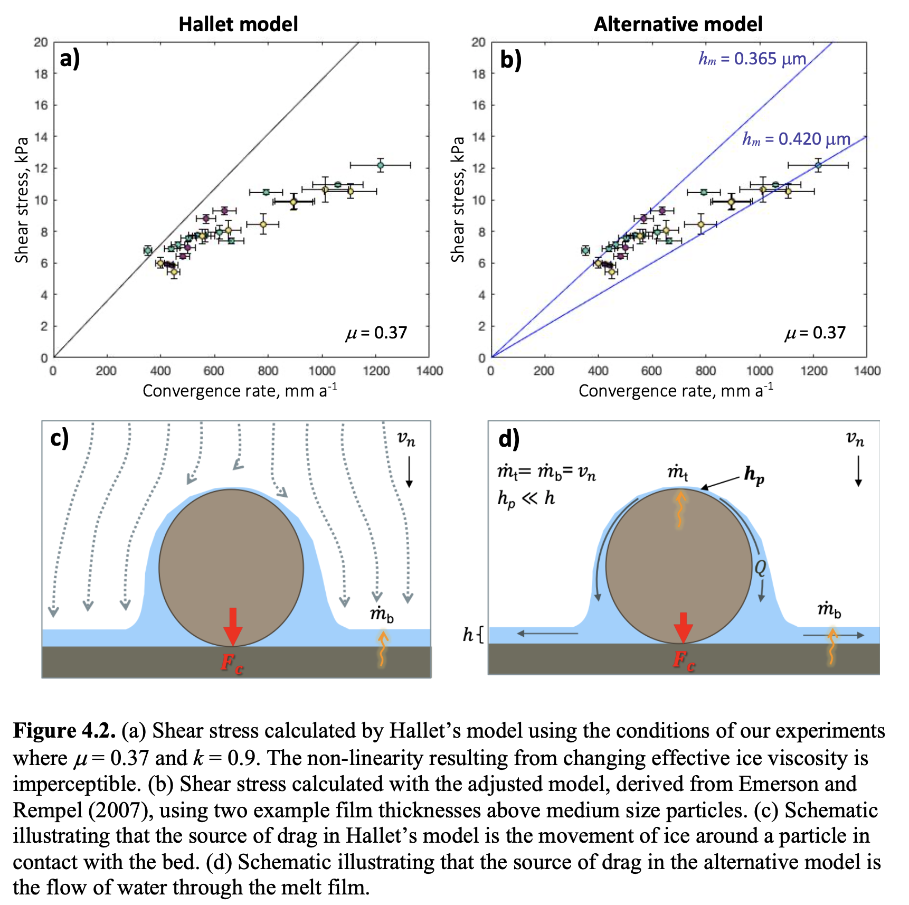
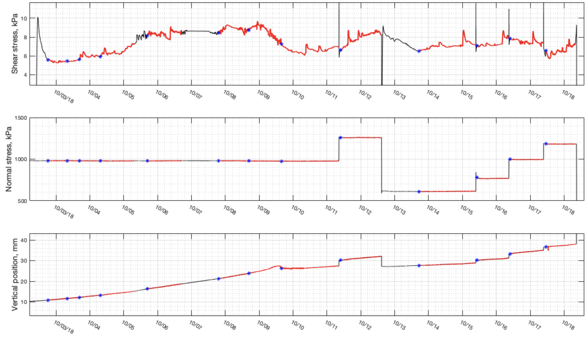
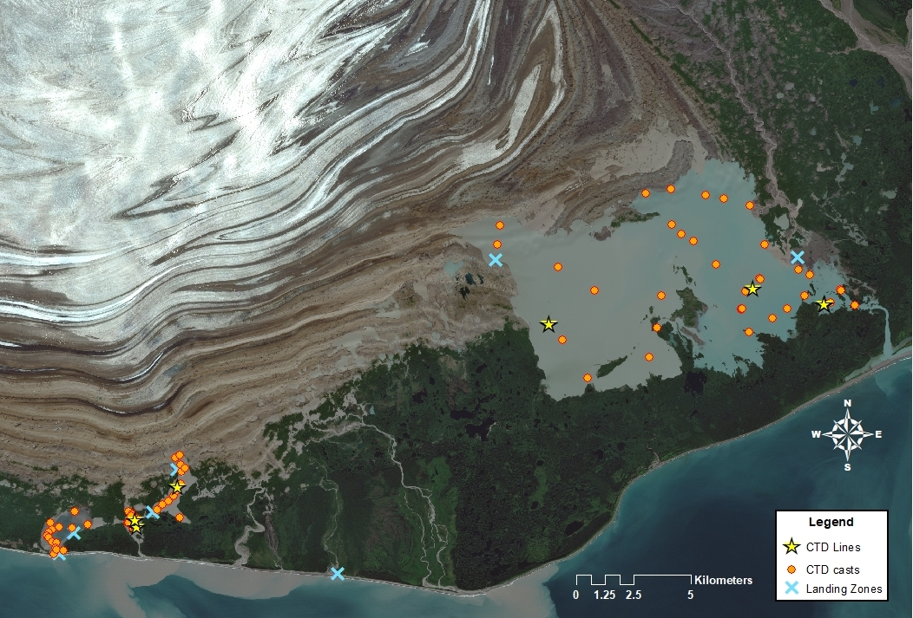
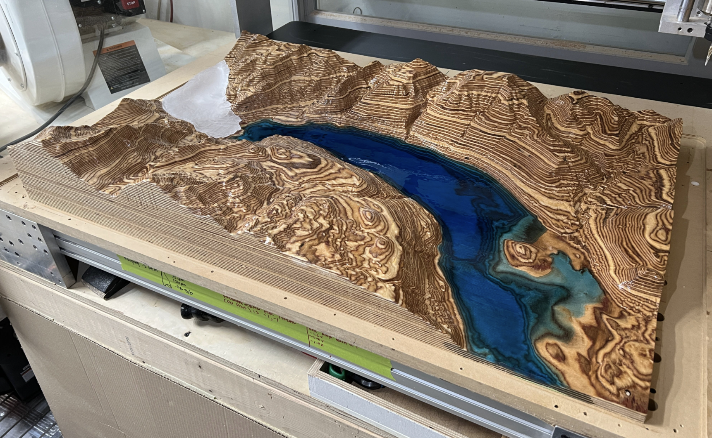
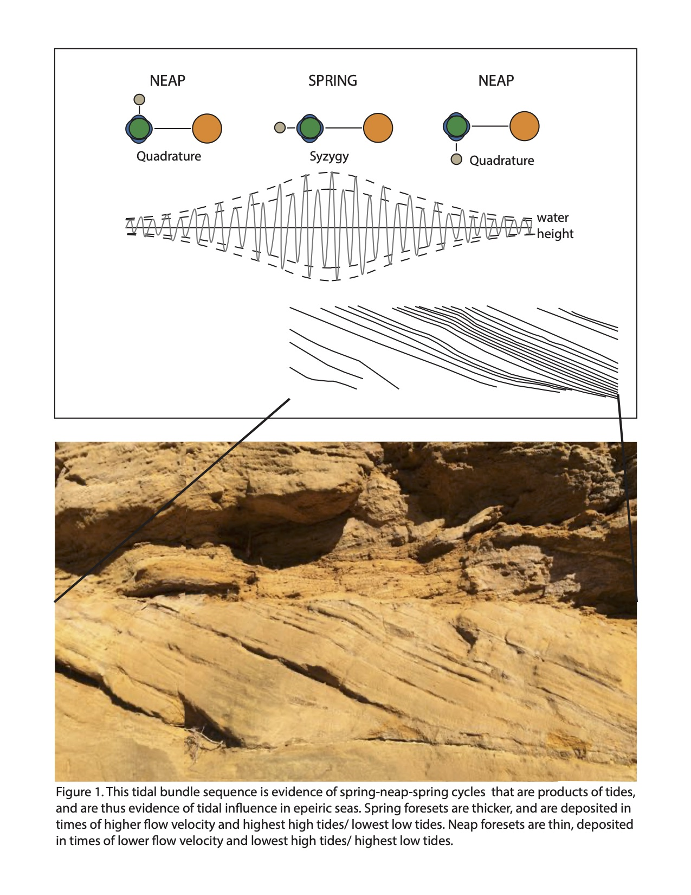

Anna Thompson | acthompson211@gmail.com | LinkedIn
The images below are still screenshots. Follow the links for code and interactive plots.
These plots are created using data from a lake that is connected to the ocean. The animation shows how salinity and temperature profiles vary over time (top frame) in relation to the tides (bottom frame).
Created with Python libraries: NumPy, pandas, and Matplotlib.
View the code and interactive plot here.
The required csv files are here.
I created this plot in the early phase of data analysis to preview the relationships between many variables. The y-axis is meaningless because of the many units, but the measured values can be viewed and compared at different moments in time by hovering the curser (example below).
Created with Python libraries: NumPy, pandas, Matplotlib, and Plotly.
View the code and interactive plot here.
The required csv files are here.
This is an interactive Leaflet map that summarizes fieldwork I have done in the past. The popups contain some basic info and sometimes links to additional detail. The data for each set of points (research, mapping, fieldtrips, and education) are saved in external JSON files.
Created with Javascript, html, Leaflet, and JSON
View the interactive map here.
This figure is an excerpt from my master's thesis. At this point in my results section, I was comparing the fit of two competing theoretical models (plotted curves) to my experimental results (plotted points). To make the plots more understandable, they are accompanied by schematics that illustrate the conceptual differences between the models (although I realize they might still be a bit dense without reading any of the 44 pages that came before this figure!).
Created with MATLAB and PowerPoint (oddly enough).
This is a time series from my master's thesis lab experiments. I had a code that would update the time series each morning to check in on the progress of the experiment. It read a csv file and had linked axes to zoom and scroll around on all three plots at once (live version is no longer available). The stars indicate times when we made adjustments.
Created with MATLAB.
This is an example of a map I made to depict where we collected data during a recent lake survey.
Created with ArcMap.
In a recent GIS project, I prepared rasters for a sculptor to carve terrain models of glacial valley for a National Park visitor display. I retrieved and trimmed existing DEMs of surface topography, interpolated radar tracks to create a raster for the bed of the ice, and reconstructed the historic ice surface using landscape clues and structure-from motion data. This is an image of the carving in progress. The wood is modeled after a real valley, and the colored epoxy will be carved to represent the glacier and fjord. The historic glacier will be included as a removable piece that extends all the way into the fjord.
Created with ArcMap and a sculptor with digital carving tools (like a reverse 3D printer).
This figure illustrates the concept of spring-neap-spring cycles in a sandstone outcrop.
Created with Adobe Illustrator.
These figures are from my undergraduate thesis. They were created to display and analyze vesicle distribution in this pillow basalt. I traced vesicles (air bubbles) in two "wedges" in the left-hand image and imported the traces into image-J to analyze vesicle shape. The figure on the right illustrates how vesicle geometry varies from the inside to the outside of the pillow in one of the wedges.
Created with Adobe Illustrator, ImageJ, and Excel.


View examples of art (mostly drawing) here.
View additional examples of scientific figures and Adobe Illustrator design here.
And view much more about myself, my research, my writing, etc. here.